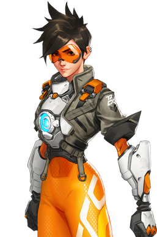
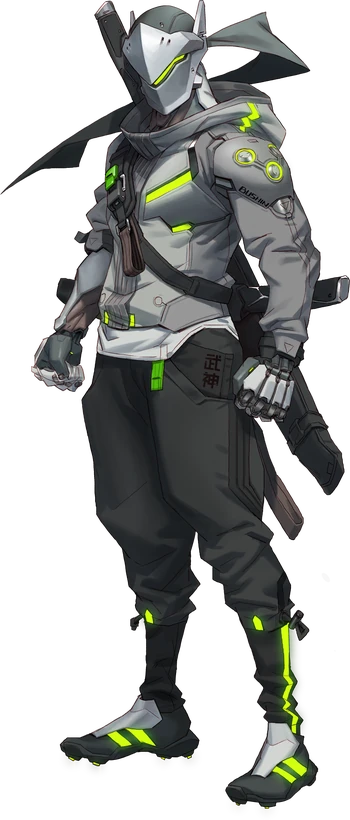

The game overwatch 2 was a contuation of its first game overwatch 1.
overwatch is a 5v5 role base fps arcade style shooter that can be installed from battle.net.
in this game you plays as any of the 3 roles support, tank, and dps.they all have there own roles in the game, the dps is to do damage, support is to healer, and the tank is to block damage.
the main goal of the game is to when by capturing the objective, pusing a payload, or gaurding a robot pushing somthing to the end.
  theses 2 charaters are the most well known in the game of overwatch, their names are genji and tracer there both in the DPS catagory